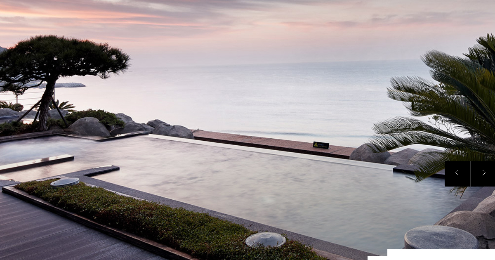
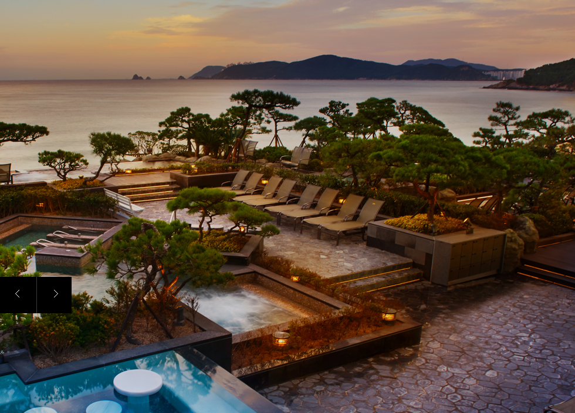
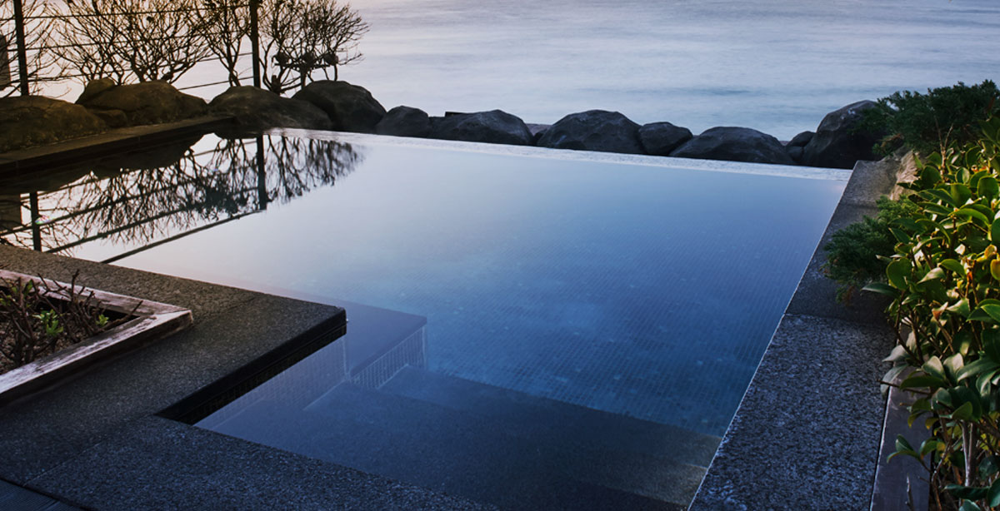
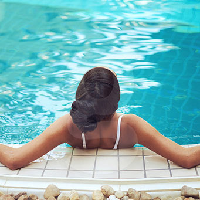
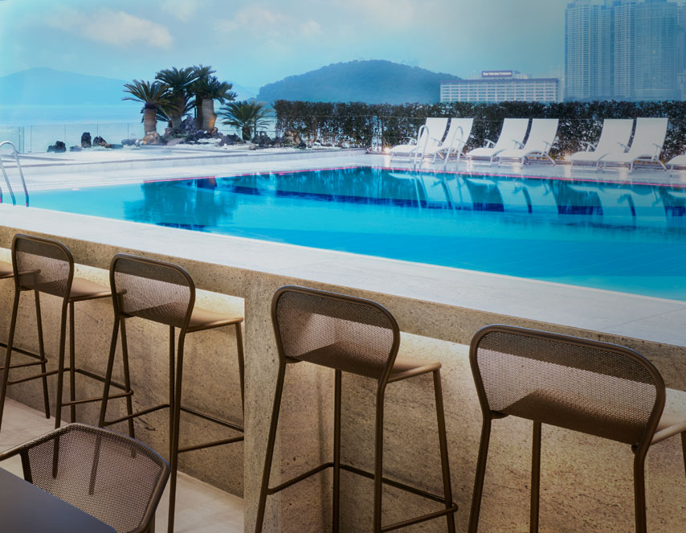
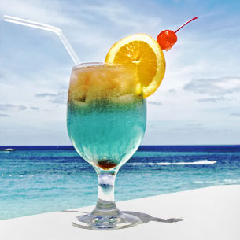

<!DOCTYPE html>
<html lang="ko" >
	<head>
		<title> :  : </title>
		<meta charset="utf-8" />
		<meta http-equiv="X-UA-Compatible" content="IE=edge">
		<meta name="viewport" content="user-scalable=yes, initial-scale=0.25, maximum-scale=1 minimum-scale=0, width=1400px" />
		<meta name="format-detection" content="telephone=no">
		<link rel="stylesheet" type="text/css" href="../../css/common.css" />
		<script type="text/javascript" src="../../js/jquery-1.11.2.min.js"></script>
		<script type="text/javascript" src="../../js/jquery.easing.1.3.min.js"></script>
		<!--[if lt IE 9]><script src="../js/respond.min.js"></script><![endif]-->
		<!--[if lt IE 9]><script src="../js/html5shiv.js"></script><![endif]-->
		<!--[if IE 7]>
			<link rel="stylesheet" type="text/css" href="../css/ie7.css" media="all" />
		<![endif]-->
<script type="text/javascript">
//<![CDATA[
$(document).ready(function(){
	project.init();
});

var project = {
	init : function(){
		project.common();
		project.main();
		project.sub();
	},

	common : function(){

	},

	main : function(){
		//Parallax개념정리 : http://blog.naver.com/PostView.nhn?blogId=hsoojy_&logNo=220119019456&redirect=Dlog&widgetTypeCall=true
		//참고사이트 : http://zameckezahrady.cz/
		var $window = $(window);

		$('.section').each(function(index){
			var $self = $(this);
			var offsetCoords = $self.offset();
			
			function ifParallax(){
				if (($window.scrollTop() + $window.height()) > offsetCoords.top && ((offsetCoords.top + $self.height()) > $window.scrollTop())) {
				//window의 높이와 this(section)의 top이 만날시 : windowTop=0 + full 높이 > this.offset().top 그리고 (this.offset().top + this 높이):this 섹션영역 > 0

				//if (($window.scrollTop()) > offsetCoords.top && ((offsetCoords.top + $self.height()) > $window.scrollTop())) {
				//window의 Top와 this(section)의 top이 만날시 : windowTop=0 > this.offset().top 그리고 (this.offset().top + this 높이):this 섹션영역 > 0

					/*
					var yPos = -($window.scrollTop() / 8);
					if ($self.attr('id') != 'first') {
						yPos += 126;
					}

					var coords = '50%' + yPos + 'px';
					$self.css('backgroundPosition', coords);
					*/
					$('.parallax', $self).each(function(index) {
						var $sprite = $(this);
						var yPos = -($window.scrollTop() / $sprite.data('speed')) + $sprite.data('offsety');
						$sprite.css({"transform":"translate3d(0px, " + yPos + "px, 0px)"});
					});
				}
			};

			ifParallax();

			$(window).scroll(function(){
				ifParallax();
			});
		});

		/*
		$(window).scroll(function(){
				$sv = $(window).scrollTop();
				$sec_1 = $(".ocean").offset().top;
				$pic_1 = $(".ocean .pic").offset().top;
				$a = $sv + (790 / 2);
				console.log($sv);
				console.log($a);

				if($sv > $("#contents").offset().top){  // 현재 스크롤값이 첫번째 div offset top값 보다 크면 실행
					//alert();
					$(".ocean .pic").css({"transform":"translate3d(0px, " + ($sec_1) + "px, 0px)"}); 
					}else {
					//$('#area3').css('background-position-y','top');
				}
		});
		*/
	},

	sub : function(){

	}
}
//]]>
</script>
<style type="text/css">
/* layout */
body{width:100%;}
#wrap{width:100%; position:relative; z-index:10;}
#header{width:100%; height:90px; border-bottom:1px solid #ddd; z-index:999;}
#visual{width:100%; height:700px; background-color:#eee;}
#contents{width:100%;}
#footer{width:100%; height:100px; background-color:#000;}
.in_Layer{width:1000px; margin:0 auto; }

#skip{}
#skip a{display:block; position:absolute; top:0; width:0; height:0; margin-top:-1px; text-align:center; white-space:nowrap; overflow:hidden; text-decoration:none;}
#skip a:focus, #skip a:active{position:relative; top:0; left:0;  width:100%; height:40px; line-height:40px; font-size:18px; font-weight:bold; color:#fff; background-color:#333; z-index:100;}

/* easing */
.e-i2{-webkit-transition:all .2s ease-in;
-moz-transition:all .2s ease-in;
-o-transition:all .2s ease-in;
transition:all .2s ease-in;}
.e-i3{-webkit-transition:all .3s ease-in;
-moz-transition:all .3s ease-in;
-o-transition:all .3s ease-in;
transition:all .3s ease-in;}
.e-o2{-webkit-transition:all .2s ease-out;
-moz-transition:all .2s ease-out;
-o-transition:all .2s ease-out;
transition:all .2s ease-out;}
.e-o3{-webkit-transition:all .3s ease-out;
-moz-transition:all .3s ease-out;
-o-transition:all .3s ease-out;
transition:all .3s ease-out;}
.e-c3{
-webkit-transition:all .3s cubic-bezier(.96, .04, .10, 1.01);
-moz-transition:all .3s cubic-bezier(.96, .04, .10, 1.01);
-o-transition:all .3s cubic-bezier(.96, .04, .10, 1.01);
transition:all .3s cubic-bezier(.96, .04, .10, 1.01);}

/* font-family: 'Roboto', sans-serif; */
#contents .main_contents{padding:90px 0 130px 0;}
#contents .top{padding-bottom:100px;}
#contents .top .title{margin-bottom:60px; font-family: 'Nanum Myeongjo'; font-size:54px; color:#9d8b6a; font-weight:400; text-align:center;}
#contents .top .title>span{display:block; padding-top:15px; font-family:'Noto Sans KR', sans-serif; font-size:16px; color:#000; line-height:24px;}
#contents .test_navi{width:1200px; margin:0 auto;}
#contents .test_navi:after{content:""; display:block; clear:both;}
#contents .test_navi>dt{float:left; padding-right:43px; width:342px; font-family: 'Roboto', sans-serif; font-size:34px; color:#000; text-align:right;}
#contents .test_navi>dt>strong{display:block; font-size:100%; color:#000;}
#contents .test_navi>dd{float:left; margin-left:18px; width:132px; height:132px;}
#contents .test_navi>dd.f{margin-left:0;}
#contents .test_navi>dd>a{display:block; padding-top:55px; height:100%; font-size:16px; color:#040404; font-weight:600; text-align:center; border:1px solid #CCC8C1;}

/* parallax object */
#contents .parallax-area{width:100%; overflow:hidden; position:relative;}
#contents .section{width:100%; position:relative;}
#contents .section>.inner{width:1200px; height:100%; margin:0 auto; position:relative;}
#contents .section .pic{height:auto; text-align:left; position:relative;}
#contents .section .pic img{position:relative; z-index:5;}
#contents .section .bg{position:absolute; z-index:1;}
#contents .section .pic p{position:absolute; bottom:0; font-family: 'Roboto', sans-serif; font-size:130px; color:#fff; font-weight:600; z-index:5;}
#contents .section .pic p .txt{display:block; padding:50px 0; font-size:14px; color:#fff; line-height:26px;}
#contents .section .pic p .txt>strong{display:block; padding-bottom:20px; font-size:24px; color:#fff; font-weight:500;}
#contents .section .thume{position:absolute; z-index:5;}
#contents .section .text{position:absolute; bottom:0; padding:60px; width:433px; height:403px; background-color:#FFF; z-index:5;}
#contents .section .text dt{padding-bottom:30px; font-size:24px; color:#000; font-weight:400; line-height:30px;}
#contents .section .text dd{font-size:14px; color:#626262; line-height:24px;}
#contents .section .text_bg{position:absolute; bottom:0; width:433px; height:403px; z-index:5;}
#contents .section .text_bg dl{padding:60px; background-color:#FFF; position:relative; z-index:5;}
#contents .section .text_bg dt{padding-bottom:30px; font-size:24px; color:#000; font-weight:400;}
#contents .section .text_bg dd{font-size:14px; color:#626262; line-height:24px;}

#contents .section.ocean{height:907px;}
#contents .section.ocean .bg{left:0; width:40%; height:1090px; background-color:#F4F4F4;}
#contents .section.ocean .pic p{left:220px;}
#contents .section.ocean .text{right:0;}

#contents .section.nature{height:930px;}
#contents .section.nature .pic{text-align:right;}
#contents .section.nature .pic p{right:50px;}
#contents .section.nature .pic .bg{bottom:0; right:-50%; width:100%; height:340px; background-color:#D2C6AF;}
#contents .section.nature .text{left:220px;}

#contents .section.therapy{height:955px;}
#contents .section.therapy .pic{}
#contents .section.therapy .pic p{left:400px;}
#contents .section.therapy .pic .bg{bottom:0; right:0; width:300%; height:660px; background-color:#000;}
#contents .section.therapy .text{left:0;}

#contents .section.rest{height:500px;}
#contents .section.rest .pic{}
#contents .section.rest .pic p{right:0;}
#contents .section.rest .pic .bg{bottom:0; right:-50%; width:100%; height:664px; background-color:#A39273;}
#contents .section.rest .thume{right:110px;}

#contents .section.kids{height:850px;}
#contents .section.kids .pic{}
#contents .section.kids .pic>.inner{width:1200px; margin:0 auto; position:relative;}
#contents .section.kids .pic p{left:450px;}
#contents .section.kids .pic .bg{right:0; /* padding-bottom:36.25%;  */width:70%; height:630px;}
#contents .section.kids .pic .bg>span{position:absolute; width:100%; height:100%; background: url("../../images/contents/test_obj_5.jpg") right 0 no-repeat;
-webkit-background-size:cover;
-moz-background-size:cover;
-o-background-size:cover;
background-size:cover;}
#contents .section.kids .text_bg{left:0;}
#contents .section.kids .text_bg .bg{position:absolute; bottom:0; right:0; width:300%; height:480px; background-color:#F4F4F4; z-index:1}

</style> 
	</head>

	<body>
		<div id="wrap">
			<div id="header"></div>

			<div id="visual"></div>

			<div id="contents">

				
				<div class="main_contents">
					<div class="top">
						<h3 class="title">하이앤드 오션스파
							<span>
								하늘과 바다가 맞닿은 듯한 오션스파 씨메르에서<br />
								지금껏 느껴보지 못한 휴식을 경험해보시기 바랍니다.
							</span>
						</h3>

						<dl class="test_navi">
							<dt>
								CIMER 
								<strong>5concept</strong>
							</dt>
							<dd class="f"><a href="#self">OCEAN</a></dd>
							<dd><a href="#self">NATURE</a></dd>
							<dd><a href="#self">THERAPY</a></dd>
							<dd><a href="#self">REST</a></dd>
							<dd><a href="#self">KIDS</a></dd>
						</dl>
					</div>

					<div class="parallax-area">
						<section class="section ocean">
							<div class="bg parallax" data-speed="2" data-offsety="950"></div>
							<div class="inner">
								<div class="pic">
									<p class="parallax" data-speed="5" data-offsety="250">OCEAN</p>
								</div>

								<dl class="text parallax" data-speed="3" data-offsety="350">
									<dt>
										바다 위 떠있는 듯한 느낌의<br />
										환상적인 뷰 
									</dt>
									<dd>
										바다 위 떠있는 듯한 느낌의 환상적인 뷰(View)를 선사하는 공간입니다.스파 공간들 중에서 바닥이 기존보다 약간 높게 설계되어 해운대 수평선 조망을 끝없이 감상할 수 있습니다. 따뜻한 온천에 몸을 담그고 시원하게 펼쳐진 바다를 바라보고 있으면, 드넓은 바다의 품에 둘러 쌓인듯한 지금 이 순간의 편안함에만 집중하게 됩니다.
									</dd>
								</dl>
							</div>
						</section>

						<section class="section nature">
							<div class="inner">
								<div class="pic">
									<p class="parallax" data-speed="5" data-offsety="400">NATURE</p>
									<div class="bg parallax" data-speed="3" data-offsety="850"></div>
								</div>

								<dl class="text parallax" data-speed="3" data-offsety="650">
									<dt>
										계절별로 바뀌는 색다른 온천욕
									</dt>
									<dd>
										다양한 수종으로 둘러싸인 녹음 가득한 노천온천, 그리고 4개의 아담한 이벤트 베스로 구성된 자연친화 스파공간입니다. 계절별로 바뀌는 이벤트 베스에서 색다른 온천욕의 묘미를 느껴보세요! 해송의 가지 사이사이로 스쳐 불어오는 시원한 해풍이 자연을 닮은 편안함을 제공해 드립니다.
									</dd>
								</dl>
							</div>
						</section>

						<section class="section therapy">
							<div class="inner">
								<div class="pic">
									<p class="parallax" data-speed="5" data-offsety="750">THERAPY
										<span class="txt">
											<strong>부드러운 버블로 천상의 휴식을</strong>
											버블매트 등의 설비구성으로 또 다른 휴양의 의미를 느낄 수 있는 공간. 부드러운<br />
											 버블 마사지가 여러분들께 편안함의 절정을 선사합니다. 드림베스에 누워서<br />
											 실제로 마사지를 받는 듯한 천상의 휴식을 경험해 보세요.
										</span>
									</p>
									<div class="bg parallax" data-speed="5" data-offsety="1100"></div>
								</div>

								<div class="thume parallax" data-speed="3" data-offsety="800">
									
								</div>
							</div>
						</section>

						<section class="section rest">
							<div class="inner">
								<div class="pic">
									<p class="parallax" data-speed="5" data-offsety="500">REST
										<span class="txt">
											<strong>편안한 나만의 휴식공간</strong>
											원 적외선이 방출되는 청옥 건식사우나, 아쿠아 바에서의 트렌디한 스낵<br />
											 문화를 통한 호텔 식도락의 즐거움을 만끽할 수 있는 공간청옥으로 꾸며진<br />
											 건식사우나에서 정면으로 마주하는 해운대 바다의 풍경으로 마음의 편안함을<br />
											 더하고, 감각적인 식도락 문화를 제공하는아쿠아 바에서 파라다이스만의<br />
											 정통 홈메이드 메뉴를 경험해보세요.
										</span>
									</p>
									<div class="bg parallax" data-speed="5" data-offsety="680"></div>
								</div>

								<div class="thume parallax" data-speed="3" data-offsety="1050">
									
								</div>
							</div>
						</section>

						<section class="section kids">
							<div class="pic">
								<div class="bg parallax" data-speed="10" data-offsety="650"><span></span></div>
								<div class="inner">
									<p class="parallax" data-speed="5" data-offsety="1400">KIDS</p>
								</div>
							</div>

							<div class="inner">
								<div class="text_bg parallax" data-speed="3" data-offsety="1250">
									<dl>
										<dt>
											재미와 아트워크를 더한<br />
											워터스프레이 존과 작은 자쿠지
										</dt>
										<dd>
											재미와 아트워크를 더한 워터스프레이 존과 작은 자쿠지 등 어린이를 위한 세심한 배려가 돋보이는 공간 Kids Space는 에너지 넘치고 순수한 아이들을 위한 공간입니다.Colorful한 구조물 사이로 뿜어져 나오는 시원한 물줄기가 아이들에게 즐거움을 더하고 바닷속을 묘사한 물고기 장식들이 귀여운 호기심을 자극합니다. 파라다이스만의 레저 전문팀 L.E.O가 준비한 어린이 눈높이 특별 프로그램도 계절별로 준비됩니다.
										</dd>
									</dl>

									<div class="bg parallax" data-speed="3" data-offsety="1510"></div>
								</div>
							</div>
						</section>
						
						<section style="height:800px; background-color:#ddd;"></section>
					</div><!-- end : class : parallax-area -->

				</div><!-- end : class : main_contents -->

			</div>

		</div><!-- end : id : wrap -->
	</body>
</html>